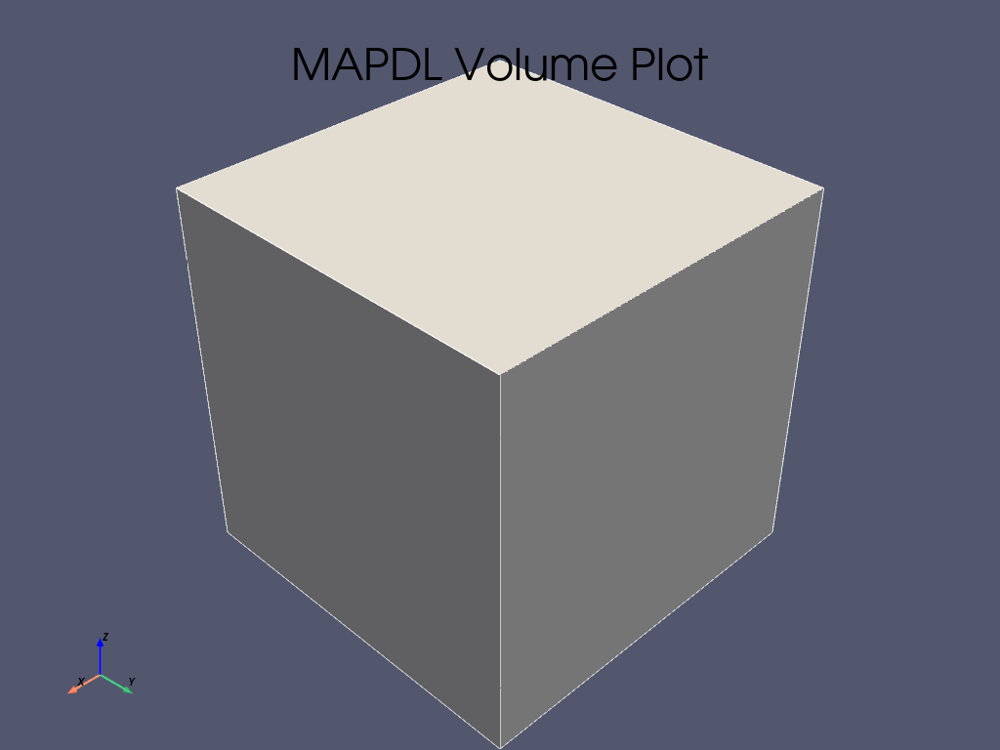

Note
Go to the end to download the full example code.
Adding a new gallery example#
This example is an example itself which demonstrates how to add new examples to the documentation.
Example location and naming#
New examples should be added as Python scripts to:
PyMAPDL/examples/XY-example-folder-name/
Note
Avoid creating new folders unless absolutely necessary. If in doubt put the example
in the folder closest to what it is doing and its precise location can be advised
on in the pull request. If you must create a new folder, make sure to add a
README.txt containing a reference, a title and a single sentence description of the folder.
Otherwise the new folder will be ignored by Sphinx.
Example file names should be in the format:
XY-example-name.py
Where XY is the number of the example. If there are already three examples numbered
00, 01, and 02, then your example must subsequently use the prefix 03.
Initial block of text#
At the top of each example there should be a block comment that contains the following parts:
Reference example#
Each example should have a reference tag/key in the form .. _ref_my_example:.
For instance:
"""
.. _ref_my_example:
============================
My new example title
============================
This new example...
"""
The .. _ref_ is necessary. Everything that follows is your reference tag. As
convention, we keep all references all in snake_case.
Example description#
This section should give a brief overview of what the example is about or what it demonstrates. The title should be changed to reflect the topic that your example covers. A well-structured example should be divided in several parts. The following lists gives you an idea of this division:
Problem specification
Problem description
Launching MAPDL
Build the geometry
Model definition
Mesh
Boundary conditions
Solution
Review the results
After this preamble is complete, the first code block begins.
from ansys.mapdl.core import launch_mapdl
# start MAPDL
mapdl = launch_mapdl()
print(mapdl)
Product: Ansys Mechanical Enterprise Academic Student
MAPDL Version: 24.2
ansys.mapdl Version: 0.68.6
Your code goes here…
mapdl.prep7()
mapdl...
Basic text formatting#
RST provides several ways to format text:
Bold: Use double asterisks ** or double underscores __ around the text that you want to make bold. For example, **my bold text**.
Italic: Use single asterisks * or single underscores _ around the text that you want to italicize. For example, _my italic text_.
Monospace: Use single backticks ` around the text that you want to display in monospace font. For example, `my monospace text`.
Lists#
RST supports both ordered and unordered lists:
Ordered List:
#. Item 1 #. Item 2
Unordered List:
- Item 1 - Item 2
Equations and numbers#
To include equations or numbers, you can use the following syntax:
Equations:
.. math:: f(x) = x^2 + 2x + 1
Numbered Equations:
.. math:: :number: 1 f(x) = x^2 + 2x + 1
Code blocks#
To include code blocks in RST, use the double colons :: followed by indentation:
.. code:: python
def greet(name):
print("Hello, {}!".format(name))
This renders as:
def greet(name):
print("Hello, {}!".format(name))
Section title#
Code blocks can be broken up with text “sections” which are interpreted as restructured text.
This will also be translated into a markdown cell in the generated jupyter notebook. Sections can contain any information you may have regarding the example such as step-by-step comments or notes regarding motivations etc.
To create a title or a section, underline it with the appropriate
characters, such as``=``, *, or ~.
For example:
==========
My chapter
==========
My text...
My section
==========
My text...
My paragraph
------------
My text
It does not matter which character you use, but you need to be consistent through the whole document. For more information, see RestructuredText Primer in the Sphinx documentation.
As in Jupyter notebooks, if code is left unassigned at the end of a code block
(as with mapdl in the previous block), the output is generated and
printed to the screen according to its __repr__.
Otherwise, you can use print() to output the __str__.
# more code...
mapdl.clear()
mapdl.prep7()
print(mapdl)
Product: Ansys Mechanical Enterprise Academic Student
MAPDL Version: 24.2
ansys.mapdl Version: 0.68.6
Plots and images#
If you use an mapdl plotting command the result will be auto-generated and rendered in the page. Like so:
mapdl.block(0, 1, 0, 1, 0, 1)
mapdl.vplot()
- 
Matplotlib plots are also rendered in HTML format.
import matplotlib.pyplot as plt
fig = plt.figure()
ax = fig.add_subplot(111)
x = list(range(10))
y = [i**2 + 3 * i - 1 for i in x]
ax.plot(x, y)
ax.set_xlabel("x")
ax.set_ylabel("y")
plt.show()
Additionally you can reference images and figures using the image and
figure directives:
.. image:: path/to/image.extension
(options)
and
.. figure:: path/to/image.extension
(options)
Making a pull request#
Once your example is complete and you’ve verified builds locally, you can make a pull request (PR). Branches containing examples should be prefixed with doc/ as per the branch naming conventions found here: Contributing to pandas.
Note that you only need to create the python source example (.py). The jupyter
notebook, the example html and the demo script will all be auto-generated via sphinx-gallery.
Stopping mapdl#
This block of code should be included always.
mapdl.exit()
Total running time of the script: (0 minutes 1.565 seconds)